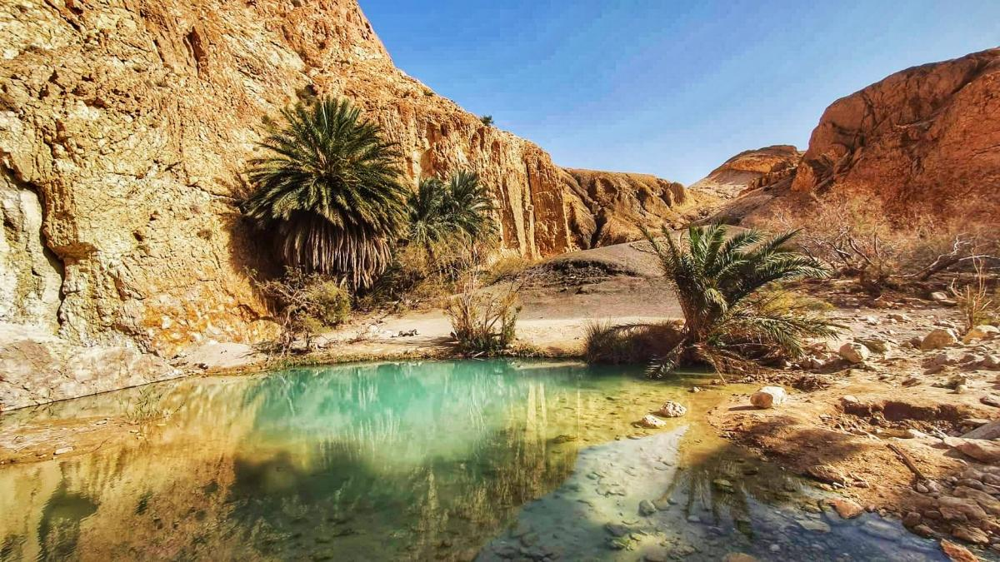

“L’oasis de Tozeur est un véritable trésor du désert tunisien. Elle représente un espace de vie verdoyant au cœur du Sahara, où l’eau, les palmiers et les habitants créent un équilibre unique entre nature et culture.”

🌴 les palmiers
milliers de palmiers dattiers
plusieurs étages de cultures (palmiers, arbres fruitiers, légumes)
rôle économique (dattes de Tozeur)
🏠 la vie dans l'oasis
habitation traditionnelle : Les maisons sont souvent construites avec des matériaux locaux comme la terre et la brique. Elles sont adaptées au climat chaud du désert pour garder la fraîcheur à l’intérieur.
travail agricole : Les habitants travaillent principalement dans l’agriculture. Ils cultivent les palmiers dattiers ainsi que d’autres plantes comme les légumes et les arbres fruitiers grâce à l’irrigation.
relation avec la nature : Dans l’oasis, la nature est très importante. Les habitants respectent l’eau et les palmiers, car ils sont essentiels pour la vie. Il existe un équilibre entre l’homme et son environnement.
🌞 Un paysage unique
L’oasis de Tozeur offre un paysage exceptionnel où le vert des palmiers contraste avec le sable doré du désert. Ce mélange de nature et de désert crée une vue magnifique qui attire de nombreux visiteurs chaque année. Les sources d’eau, les jardins et les montagnes autour de l’oasis rendent cet endroit encore plus spécial.